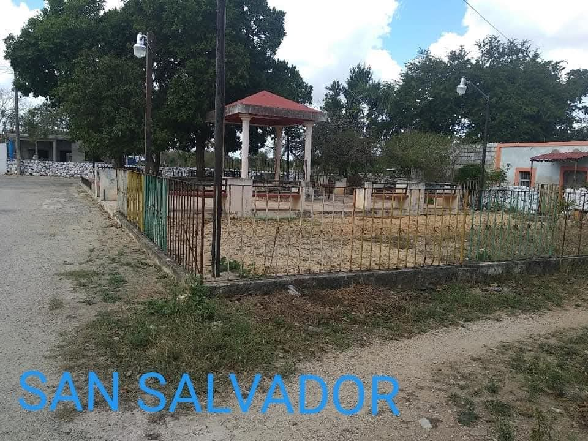

Mapa Interactivo de Seguridad
Niveles de Riesgo
Alto riesgo (Barrios peligrosos)
Riesgo moderado
Bajo riesgo (Barrios seguros)
Puntos de Interés
Puestos policiales
Cámaras de vigilancia
Puntos de ayuda comunitaria
Barrios de Halachó
Consulta la información de seguridad específica para cada barrio del municipio.
Barrios con alto índice delictivo
- Alta incidencia de robos a viviendas
- Asaltos frecuentes en calles secundarias
- Problemas con pandillas locales
- Poca iluminación en la mayoría de calles
78%
Reportes delictivos
24
Incidentes/mes

- Robos a transeúntes frecuentes
- Venta de drogas en zonas específicas
- Violencia doméstica reportada
- Poca presencia policial
65%
Reportes delictivos
18
Incidentes/mes
- Robos de vehículos frecuentes
- Asaltos a negocios pequeños
- Zonas con alta densidad poblacional
- Calles en mal estado y oscuras
72%
Reportes delictivos
21
Incidentes/mes
Barrios con delincuencia moderada
- Robos ocasionales a viviendas
- Problemas con ruido y fiestas
- Algunos reportes de vandalismo
- Iluminación regular en calles principales
42%
Reportes delictivos
12
Incidentes/mes
- Robos menores en comercios
- Alguna presencia de pandillas
- Problemas con ebrios los fines de semana
- Presencia policial intermitente
38%
Reportes delictivos
9
Incidentes/mes
- Presencia de pandillas juveniles
- Robos ocasionales a transeúntes
- Vandalismo en propiedad pública
- Problemas de ruido por las noches
45%
Reportes delictivos
14
Incidentes/mes
Barrios con nula delincuencia
- Vigilancia constante día y noche
- Buen alumbrado público
- Presencia policial permanente
- Cámaras de seguridad operativas
5%
Reportes delictivos
2
Incidentes/mes
- Comunidad tranquila y organizada
- Patrullajes comunitarios
- Buen estado de calles y alumbrado
- Vecinos participativos en seguridad
8%
Reportes delictivos
3
Incidentes/mes
Consejos de Seguridad
Medidas preventivas según el nivel de riesgo de cada zona.
Zonas de alto riesgo
- Evitar transitar solo, especialmente de noche
- No mostrar objetos de valor en la calle
- Conocer rutas alternas y zonas seguras cercanas
Zonas moderadas
- Estar alerta en horarios críticos
- Viajar en grupo cuando sea posible
- Reportar actividades sospechosas
Para todos los barrios
- Participar en redes vecinales de seguridad
- Conocer los números de emergencia locales
- Mantener buena comunicación con vecinos